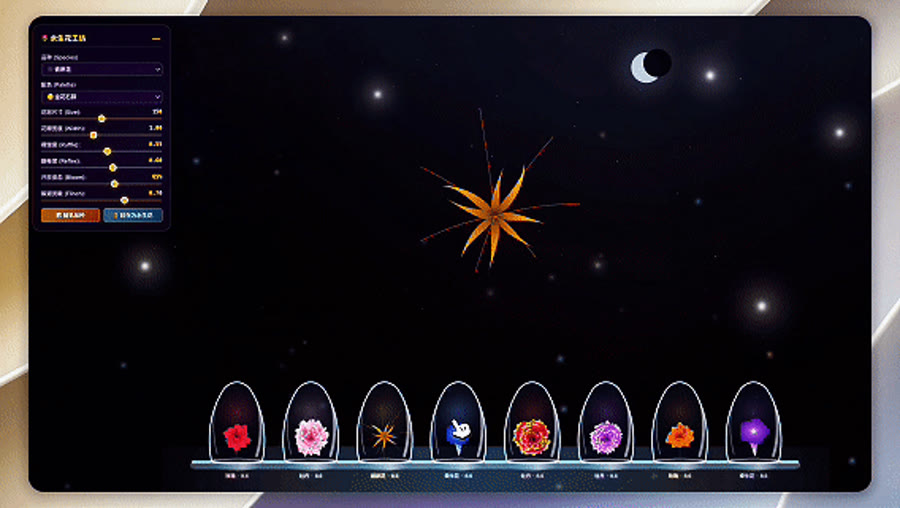
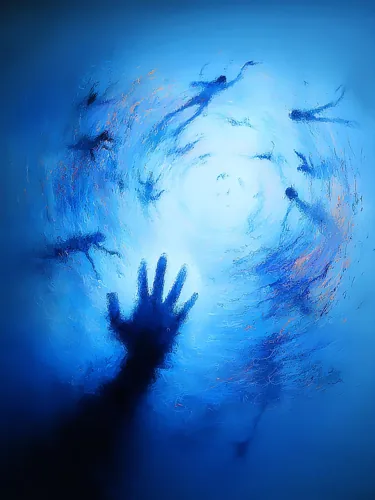

开发 → 自动化测试 → 数据产品经理。
我习惯把复杂的系统变得可见，却越来越在意那些没有接口、没有日志、说也说不清的感受。
所以我开始用图像、声音和交互，为它们做一些可以停留的小世界。
SHA.W.Z / 云野自由
我用图像、声音和交互，做一些可以被触碰、被重访的小世界。它们从难以命名的感受开始，也把最后的解释留给你。
产品经理 · AI Agent与 Skill 开发 · 数字内容创作

一段视觉记忆
它们记录了我反复回到的颜色、光线和情绪。你可以慢慢拖动这条长卷，也可以展开来看完整画廊。
拖动、触屏滑动或使用方向键
三个可以走进去的瞬间
不是为了替你解释，而是让一次触碰、一段停留，真的改变眼前的世界。
会记得被触碰的小世界
每一件都有自己的天气、呼吸和回应。打开它们时，作品才真正开始。
关于我
这些年，我看过无数代码和数据。复杂的系统可以被建模、被呈现、被调试——但人的内心不行。
开发 → 自动化测试 → 数据产品经理。
我习惯把复杂的系统变得可见，却越来越在意那些没有接口、没有日志、说也说不清的感受。
所以我开始用图像、声音和交互，为它们做一些可以停留的小世界。
我不替你定义感受，也不让自动化替创作者做最后的决定。技术只是把这些微小体验做出来的方法。
作品背后
我的技术工作不站在作品前面。它负责让交互成立、让创作流程可靠，也让每一个判断经得起验证。
从难以命名的感受出发，寻找一个只有亲手完成才有意义的动作。
相关项目把灵感交给适合的创作工具，同时把最后的决定留在创作者手里。
相关项目分清事实、推断与待验证，让增长不盖过真实读者和作品本身。
相关项目